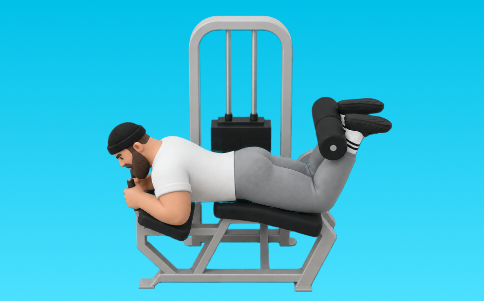

ハムストリングカール(ライイング)

ハムストリングカール(ライイング)とは、マシンを使って「膝を曲げる」動作で太もも裏（ハムストリング）を鍛える種目です。軌道が安定して狙った部位に効かせやすいのが特徴で、かかとを引き寄せて収縮し、ゆっくり戻す動作を繰り返します。下半身の筋力・筋量アップが期待できます。
- 対象部位
- 脚
- 器具
- マシン
- 記録形式
- 重量・回数
- 別名
- レッグカール
YouTube動画
-
【レッグカール】座る・うつ伏せのマシン別！太もも裏に効かせるやり方のコツを解説！
-
【見栄えが変わる】フィジーク選手に欠かせない“ハム&内転筋狙い”のレッグカール。
-
How to Lying Hamstring Curl | Proper Technique, Set Up, & Mistakes
-
How to Lying Hamstring Curl (Correct Method)
-
リバースハイパーエクステンション講座【筋トレ】自宅で臀筋とハムストリングトレ！
-
【ホームジム】ダンベルレッグカールのやり方【脚トレ】
YouTubeショート
-
チューブエクササイズ 「レッグカール（ライイング）」
-
ハムストリングス最恐トレーニング
-
【ハムストリングに超効く！】デクラインダンベルレッグカール40kg10回3セット
-
鈴木雅 レッグカール×骨盤 IRONMAN「トレーニングアップデート術vol.01」
-
【ハムストリング】バランスボールで鍛えるレッグカールのやり方！#shorts
-
ライイング・レッグカール
-
レッグカール 裏ももからお尻までこれ一つ!
-
【ヒップアップ効果】ヒップスラストは脚の位置と身体の姿勢で効く部位が違います。ワークアウトが無駄にならないようにポイントを押さえましょう💥#shorts #筋トレ #ダイエット #健康
-
(シーテッド)レッグカール マシンの使い方
-
【SGIR】ジョージ（兄）&Sam（弟）と学ぶレッグカール
-
【SGIR】レッグカールのポイント
-
レッグプレス300kg#shorts#筋トレ
-
How to Properly Perform Lying Hamstring Curls With Good Form (Exercise Demonstration)
-
【筋トレ】脚とお尻トレメニュー６種目！
-
レッグカール #レッグカール #legcurl #legs #脚
-
世界最大のダンベルがヤバすぎる【世界の筋肉】
-
脚トレはランジ。#脚トレ #トレーニング #ジム #脚痩せ #ダイエット #フィジーク #筋トレ
-
ジュラシック木澤が45度レッグプレスに対して思ってる子事
-
【ハムストリングスを鍛える！】レッグカール
-
Don't Make This Lying Leg Curl Form Error! 🚨
-
レッグエクステンションをより効果的にする3つのテクニック #筋トレ #フィットネス
-
正しいレッグプレス4つのポイント #フィットネス #筋トレ
-
【シャイニー選手】ケーブルカールのポイント
-
ミニマリスト脚トレ3種目を紹介 #フィットネス #筋トレ
-
【藍住店女性ルーム】レッグカール 使い方動画
-
スタンディング レッグカール 空き時間にできる！細綺麗な裏ももをつくるエクササイズ！！
-
レッグカールでハムストリングスを鍛えて脚を引き締めよう💪😁#shorts#脚やせ#ヒップアップ
-
3 Top Exercises For Great Legs 🦵🏋️ #shorts
-
How to Actually Grow your Hamstrings Bigger Fast with Lying Leg Curls.12-Week training ebook in bio
-
How to Build Stronger Glutes & Hamstrings at Home with Bands
-
How To: Lying Hamstring Curl
動作方法
- 足幅を決め、体幹を固める
- 股関節と膝を同時に曲げて下ろす
- 足裏全体で床を押して立ち上がる
動作ポイント
- 膝とつま先の向きをそろえる
- 胸を落としすぎない
- かかとを浮かせない
ワンポイントアドバイス
- ウォームアップで股関節と足首を動かす
- 高重量の日はセーフティ設定を確認する
目的別回数設定
目的や体力に応じた一般的な目安です。無理のない範囲で調整してください。
- 筋力アップ
- 1〜5回
- 筋肥大
- 6〜12回
- 持久力アップ
- 13〜20回
YouTube動画について
動画はYouTubeの公開情報をもとに表示しています。内容は投稿者によるもので、Biggrによる監修ではありません。
アプリを入手
筋トレやトレーニングの記録はBiggrにお任せください。今すぐ無料で使い始められます。